Cellular microtubules are regulated by the "tubulin code", diverse posttranslational modifications that modulate their dynamics and architecture. Analogues to the histone code, tubulin code plays crucial roles in controlling and reorganizing the microtubule cytoskeleton in essential processes such as cell division, migration, and intracellular transport. Dysregulation of these modifications leads to a broad range of diseases, including cancers, neurodegeneration, ciliopathies, and cardiomyopathies.
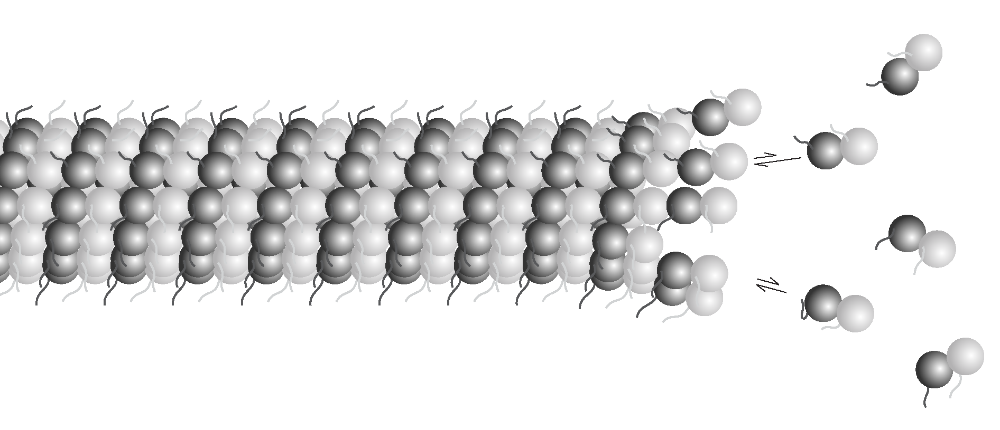
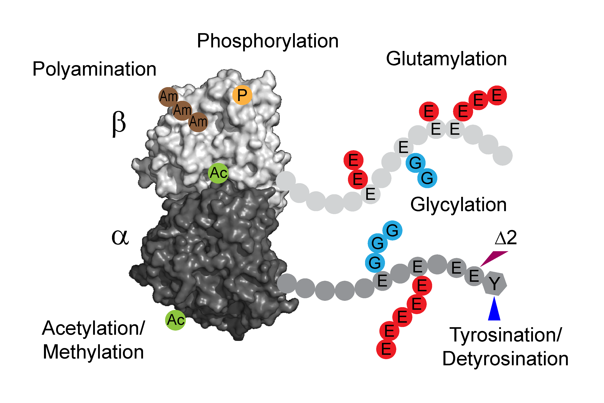
The differential stability of cellular microtubules specializes them for distinct physiological processes. For example, stable microtubules in neuronal axons provide mechanical support and enable intracellular trafficking, while dynamic microtubules in the growth cone support motility. This is primarily regulated through the tubulin code. Tyrosination/detyrosination, the addition and removal of terminal tyrosine in the alpha tubulin tail, and delta2 modification, the subsequent removal of penultimate glutamate, mark microtubules of different stabilities. Stable microtubules are often enriched in detyrosination and delta2 modification, while dynamic ones are usually tyrosinated. Although these modifications are widely used as proxies for microtubule stability, the mechanisms behind their regulation remain uncharacterized due to the challenges in generating homogeneous tubulin with well-defined modifications for in vitro studies. Using engineered human recombinant tubulin, we found that these modifications do not alter the intrinsic stabilities of microtubules. Instead, tyrosination increases microtubule dynamicity by selectively recruiting cellular effectors. Our work demonstrated that modification-dependent recruitment of regulators can generate microtubule subpopulations with distinct dynamic properties, a tenet of the tubulin code hypothesis. Read more
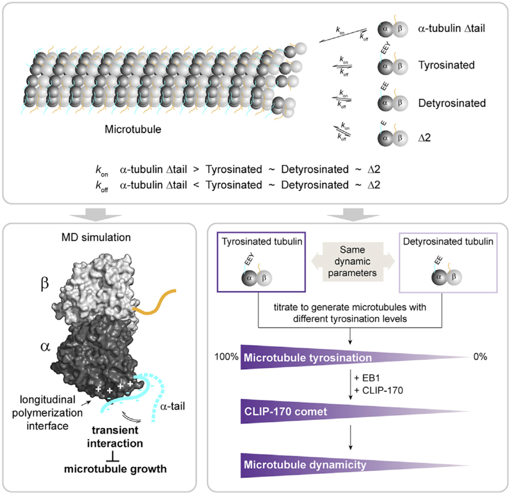
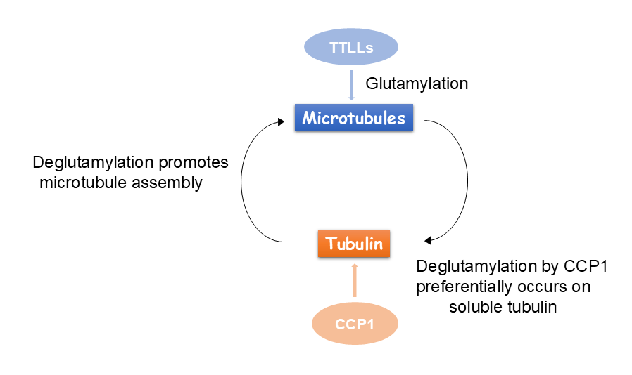
Glutamylation, the addition of glutamates to the tubulin tails, is another hallmark for stable microtubules. It is a dynamic process where the modification is written by TTLL enzymes and erased by CCP enzymes. We found that glutamylated microtubules grow slower and are less stable, suggesting that the stabilization effect observed in cells is due to effectors. In addition, we found that glutamate removal by CCP1 occurs preferentially on soluble tubulin, unlike TTLLs that prefer modifying microtubules. This substrate preference establishes an asymmetry that is central to glutamylation homeostasis: deglutamylation of soluble tubulin by CCP1 promotes polymerization into microtubules and TTLL glutamylation of microtubules regulates their function through recruitment of effectors. Read more
Glutamylation is the most abundant tubulin modification in the nervous system and its dysregulation leads to neurodegeneration and ciliopathies. Analogous to the ubiquitin code, the first glutamate is added to an internal glutamate in tubulin tails by TTLLs, forming a branched structure. The branched glutamate chain can be further elongated by TTLLs or removed by CCP5. As the only enzyme known to remove branch glutamates, CCP5 is essential for maintaining glutamylation homeostasis, and its mutations cause ciliopathies in human. However, how CCP5 selectively recognizes branch glutamates from a glutamate-rich tubulin tail was unclear, as branch glutamates do not significantly change the overall net charge, suggesting a mechanism beyond simple electrostatic recognition. By solving cryo-EM structures of CCP5 in complex with microtubules, and X-ray structures with transition state analogues, we found that CCP5 deforms the tubulin tail into a sharp turn, facilitating the recognition of branch glutamates. Through enzymology coupled with mass spectrometry, we found that CCP5 is inactive on alpha tubulin and a major beta tubulin isotype in the brain, suggesting a mechanism for their accumulation in the nervous system. Our work provides the first atomistic view of how branch glutamates in proteins are recognized and removed, shedding light on the homeostasis of tubulin glutamylation. Read more
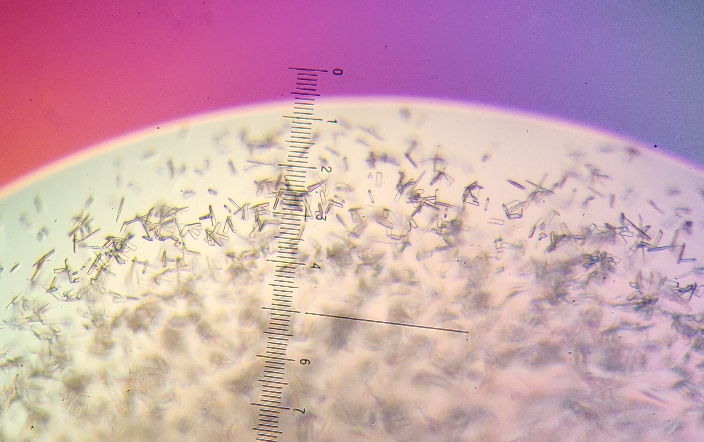
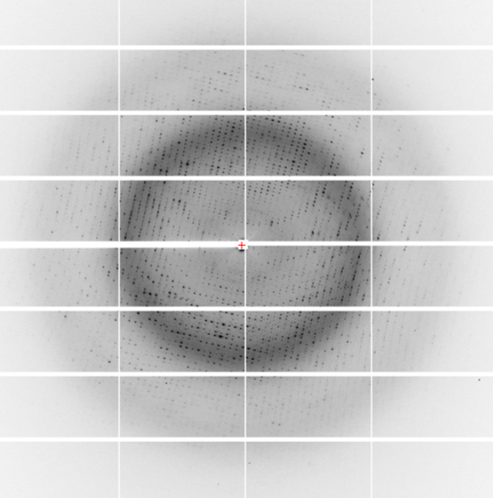
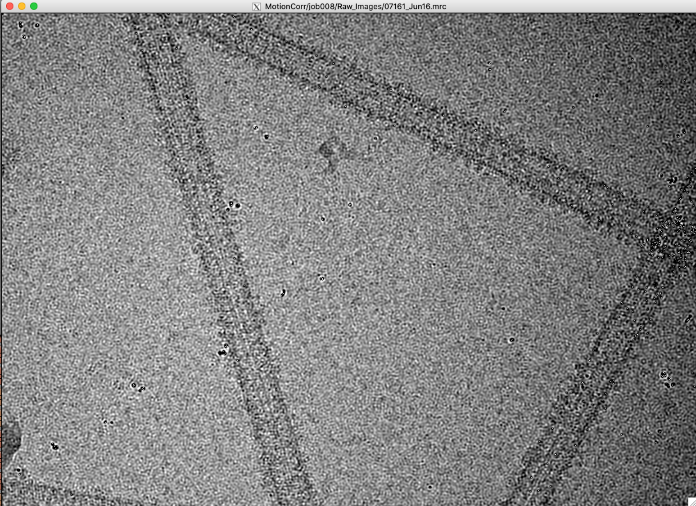
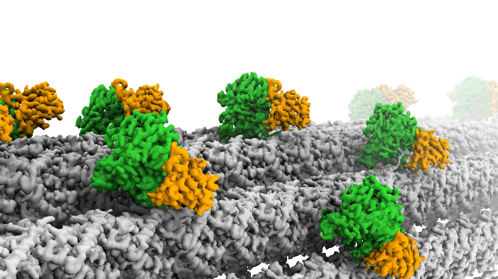
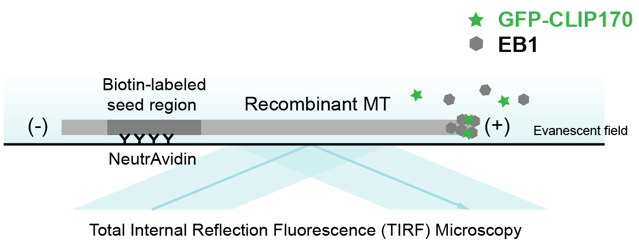
EB1/GFP-CLIP170
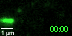
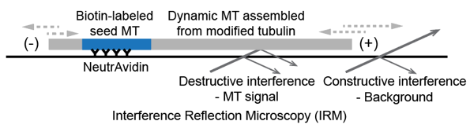

We also employ multidisciplinary approaches including biochemistry, enzymology, biophysics, and cell biology.